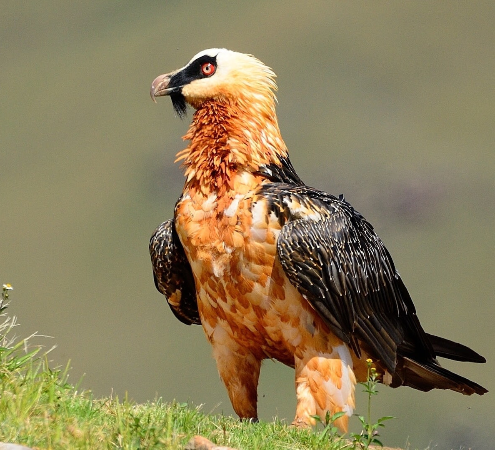
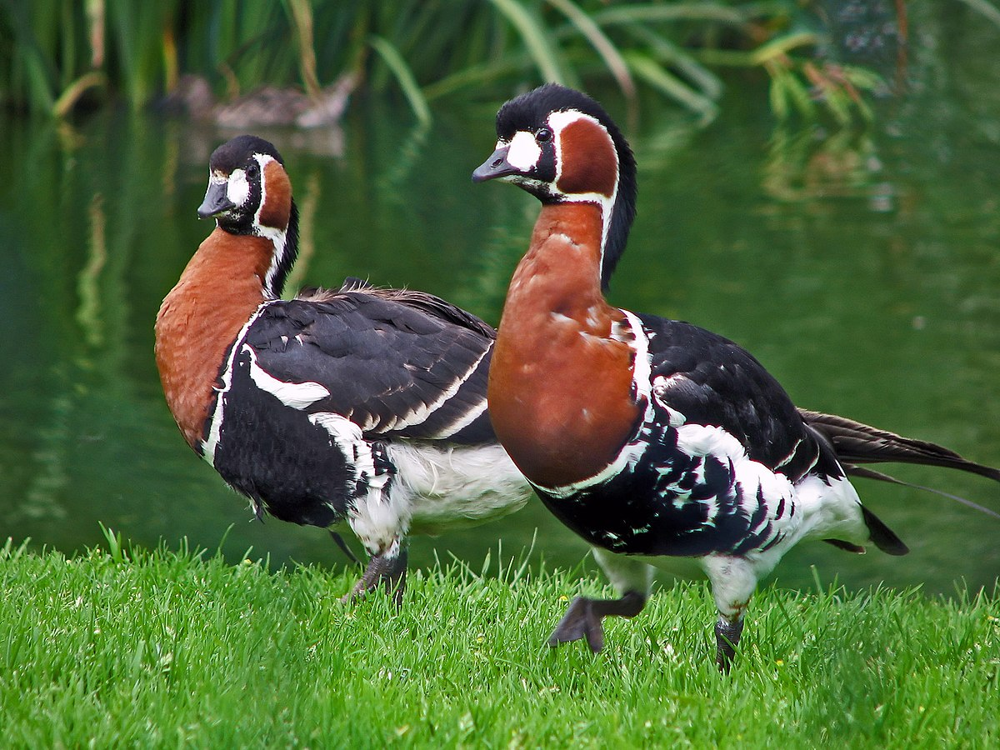
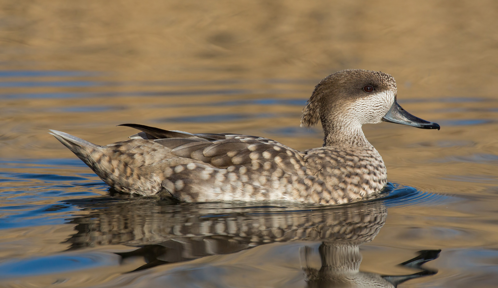

Birds
Bearded vulture
The bearded vulture is a very large bird of prey and the only member of the genus Gypaetus. This bird is also identified as Huma bird or Homa bird in Iran and north west Asia. Traditionally considered an Old World vulture, it actually forms a minor lineage of Accipitridae together with the Egyptian vulture its closest living relative. It is not much more closely related to the Old World vultures proper than to, for example, hawks, and differs from the former by its feathered neck. Although dissimilar, the Egyptian and bearded vulture each have a lozenge-shaped tail—unusual among birds of prey. Total length 95-125 cm, weight - 4.5-7.5 kg, wing length 75- 80 cm (9 birds from the Tien Shan, stored in the Zoological Museum of Moscow University, wing 812-930 mm), wingspan 275-308 cm. In an adult bird, the head, neck and ventral side are light, from whitish to bright red; there is a black spot near the eyes and on the bridle; under the beak there is a bunch of black hair-like feathers forming a beard (hence the name); the dorsal side is silver-brown, with white trunks of feathers. The iris in adult birds is whitish or yellowish with a red border, in young birds it is brown. The beak is bluish-gray, the legs are gray. The tail is long, wedge-shaped. It emits a soft whistle and a peculiar meowing sound.
Red-throated kazarka
The red-throated kazarka is a waterfowl from the duck family. In appearance it resembles a small goose with a thick neck and a short beak. The color is bright and contrasting, combines chestnut-red, white and black tones. A rare species, it breeds in the tundra in Russia, mainly in the Taimyr and neighboring regions. It winters in the western Black Sea region, southern Caspian Sea. It feeds on plant feeds — green shoots of grasses, on wintering grounds and overflowing - vegetative parts of steppe and salt marsh plants, ephemeral cereals, winter grain crops. It nests once a year in June-July, in a clutch of 3-9 eggs. It is easily tamed and domesticated. It is protected by the international and regional Red Books, is included in a number of international conventions on nature protection. Hunting for the barracks is prohibited everywhere. In addition, birds swim and dive perfectly at any age. In winter and on the fly, the Cossacks often stay in packs and stop to rest only after dark. They descend onto the water and take off with a loud cackle. In comparison with other barracks, the red-throated has a short, but thick neck and a very short, small beak. In general, it is comparable in size to such large ducks as ogar, slightly inferior to the black barrack. Body length 53-56 cm, wingspan 116-135 cm, weight 1-1.7 kg.
Marbled duck
Medium-sized species of duck from southern Europe, northern Africa, and western and central Asia. The marbled duck is approximately 39–42 cm (15–17 in) long. Adults are a pale sandy-brown colour, diffusely blotched off-white, with a dark eye-patch and shaggy head. The female averages smaller than the male, but otherwise the sexes are alike. Juveniles are similar but with more off-white blotches. In flight, the wings look pale without a marked pattern, and no speculum on the secondaries. These birds feed mainly in shallow water by dabbling or up-ending. Adults feed mostly on seeds (for example, from Scirpus and Ruppia), but also take significant quantities of invertebrates (especially aquatic insect larvae and pupae, tiny crustaceans, and—highly unusual for a duck—ants) and green plants (for example, Potamogeton). Their gizzard allows them to break down seeds and the lamellae in their beak allow them to filter feed on zooplanktonic organisms. Young marbled ducks feed mostly on invertebrates. Although they may take tiny seeds, they lack the large gizzard necessary to break down the larger seeds commonly consumed by adults.